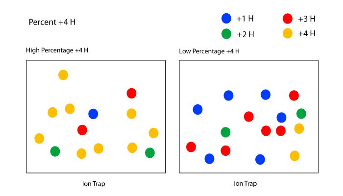

Percent +4H
Percent +4H is the percentage of all spectra matching peptides that have a charge of +4.
Higher Percent +4H indicates that the mass spectrometer may favor long peptides.
Percent +4H is calculated by looking at the charge state of all spectra that match to a peptide.

Units:
Percent (%)
Optimal:
Consistent